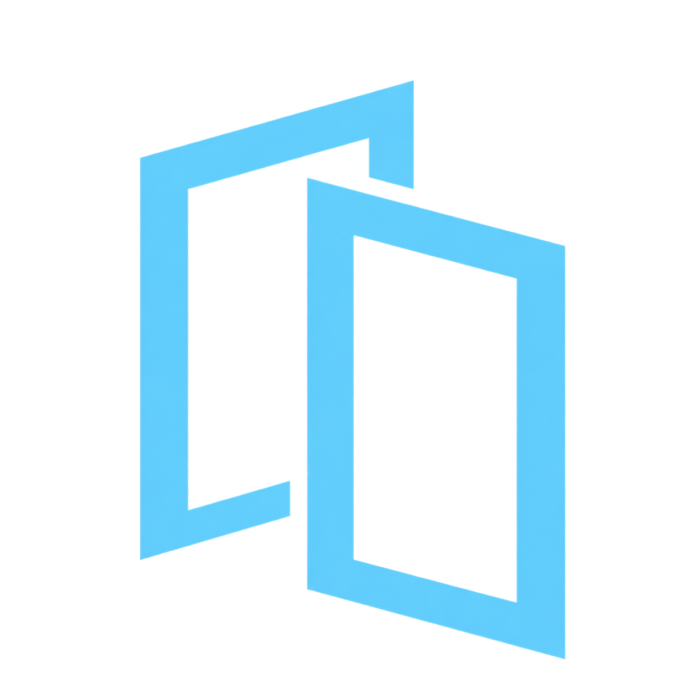

Keep the original soul
Text commentary and strategic choices stay central. Modern polish supports them instead of replacing them.

ALTERWORLDENTERPRISESMODERN AWW · CONCEPT 03
A spiritual successor that embraces AWW’s text-driven roots: fast simulations, chunky menus, surprising depth, custom everything, and the unmistakable energy of freeware discovered at 1:00 a.m.
DESIGN STUDY · NOT AN ANNOUNCED PRODUCTText commentary and strategic choices stay central. Modern polish supports them instead of replacing them.
Console type, scan lines, loud highlights, strange extras, and the confidence to leave a few rough edges.
Created wrestlers, editable moves, seeded missions, shareable leagues, and community-made data packs.